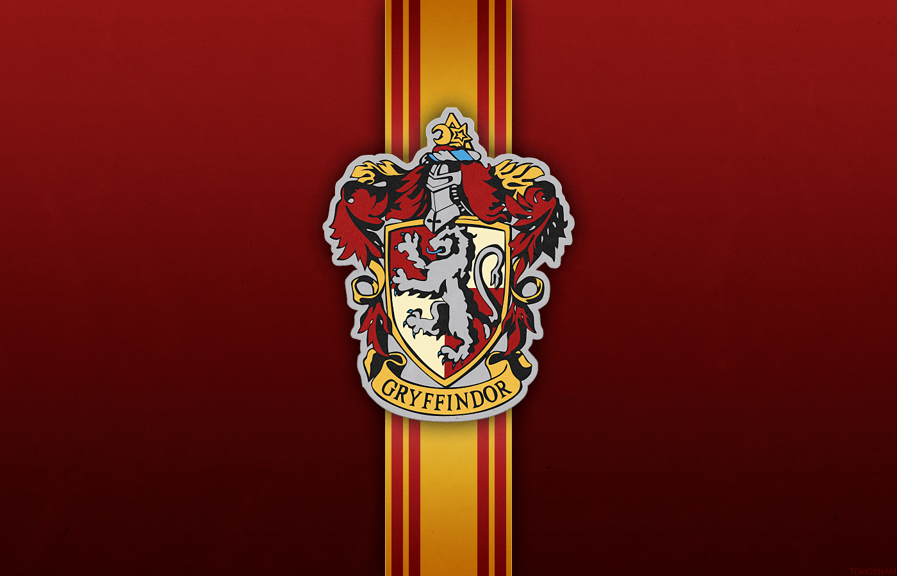
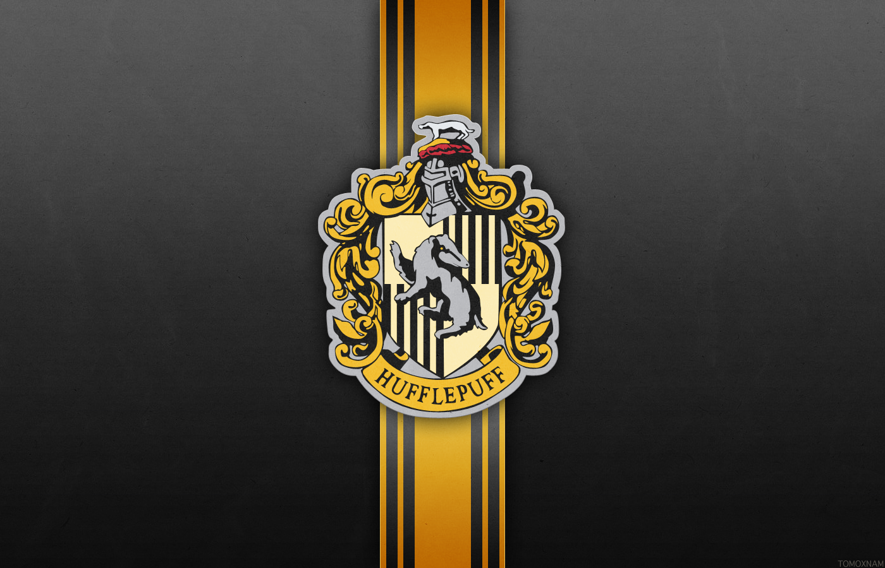
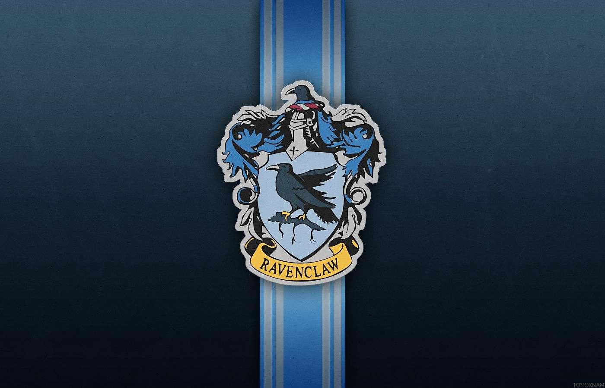
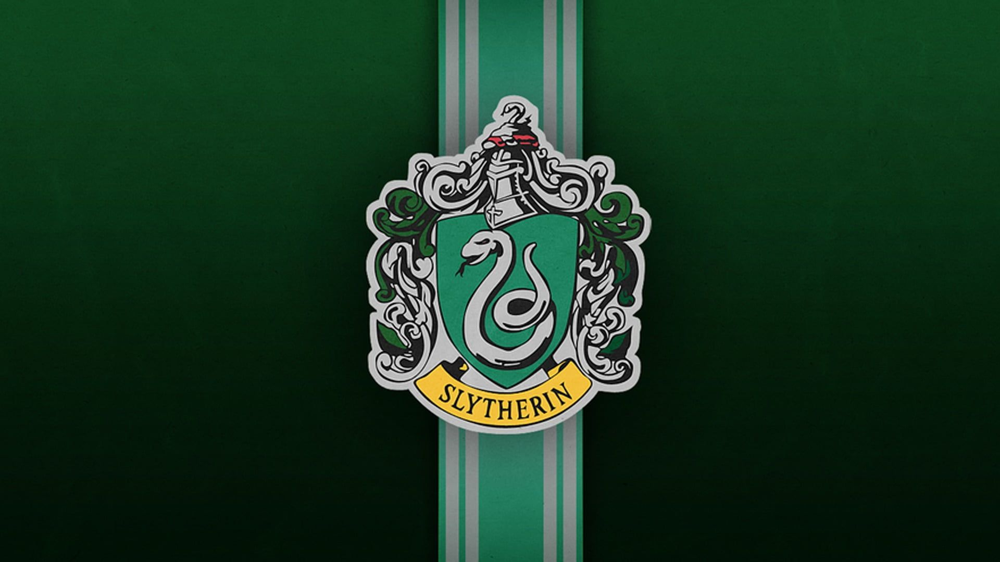
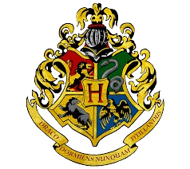

Grifinória é uma das quatro casas de Hogwarts, sendo conhecida por valorizar coragem, bravura, determinação e cavalheirismo. Fundada por Godrico Gryffindor, é a casa de alunos leais e dispostos a enfrentar desafios para proteger aquilo em que acreditam e as pessoas que amam. Seus alunos frequentemnete vestem as cores da casa: vermelho e dourado, e seu símbolo é um leão, o que representa força e coragem, e foi casa de diversos personagens importantes da história da Grifinória, como Harry Potter, Hermione Granger e Ronald Weasley. A casa é conhecida por formar bruxos determinados, aventureiros e capazes de grandes atos de heroísmo.

Lufa-Lufa é uma das quatro casas de Hogwarts, reconhecida por enaltecer lealdade, dedicação, paciência e trabalho em equipe. Fundada por Helga Hufflepuff, a casa aceita alunos gentis, justos e esforçados, que acreditam na amizade e na igualdade entre todos. Seus alunos usam as cores da casa: amarelo e preto, e seu símbolo é o texugo, o que representa persistência e lealdade. Os alunos da Lufa-Lufa costumam ser vistos como companheiros confiáveis e trabalhadores determinados. Entre os membros mais conhecidos da casa estão Cedrico Diggory e Newt Scamander. A casa é famosa por formar bruxos humildes, honestos e sempre dispostos a ajudar os outros.

Corvinal é uma das quatro casas de Hogwarts famosa por exaltar inteligência, criatividade, sabedoria e curiosidade. Fundada por Rowena Ravenclaw, a casa acolhe alunos com grande vontade de aprender, pensamento criativo e amor pelo conhecimento. Suas cores são azul e bronze, e seu símbolo é a águia, representando visão e inteligência. A sala comunal da Corvinal fica em uma das torres mais altas de Hogwarts e só pode ser acessada após responder corretamente a enigmas e perguntas desafiadoras. Os estudantes da Corvinal costumam se destacar por sua criatividade e dedicação aos estudos. Entre os membros mais conhecidos da casa estão Luna Lovegood e Cho Chang. A casa é apreciada por formar bruxos inteligentes, originais e sempre em busca de novos conhecimentos.

Sonserina é uma das quatro casas de Hogwarts e é renomada por valorizar ambição, liderança, determinação e astúcia. Fundada por Salazar Slytherin, a casa é feita de alunos estratégicos, confiantes e dispostos a fazer o necessário para alcançar seus objetivos. Suas cores são verde e prata, e seu símbolo é a serpente, representando inteligência e poder. Os estudantes da Sonserina costumam se destacar por sua capacidade de liderança e grande determinação. Entre os principais ex-alunos, destacam-se Draco Malfoy, Severo Snape e Tom Riddle. Apesar da fama de sombria, a Sonserina também é reconhecida por formar bruxos talentosos, inteligentes e extremamente habilidosos.
